ovid CS how-to guide
One task per section: when to use it, the steps, what changes and how to check it. Page names are those of the Standard view: the stages are on the top bar, the pages of the stage shown are listed on the left, and those under More pages are folded at the bottom of that list; Go to (⌘K or Ctrl K) finds any page. Numbers in brackets point to the markers in the figure. For what CS does to the data and why, see the CS reference guide.
Contents
Bring in: 1. Add a new download; 2. Send a file to another station or leave it out; 3. Name the columns of CR10X files
Organize: 4. Give a logger a station; 5. Give a raw column a common name; 6. Combine stations into one record
Correct: 7. Fix a logger clock; 8. Set the time zone; 9. Remove a bad stretch; 10. Add a calibration; 11. Change a quality limit; 12. Set up a weighing gauge; 13. Get evapotranspiration and albedo
Check and report: 14. Find out why a value was removed; 15. Find failing sensors; 16. Export data and reports; 17. Back up or share the set-up; 18. Report a problem
The three views
The same project, data and edits in three views, switched at the top (Simple, Standard, Workbench) or with ?ui=simple, ?ui=standard or ?ui=workbench in the address. A new install opens in Simple.
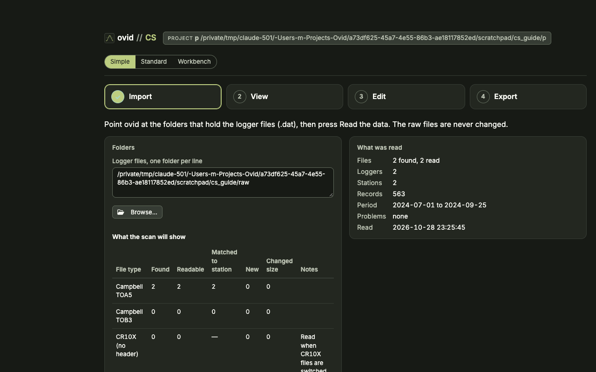
- Simple: a field check in four steps (Import, View, Edit, Export). Edit renames stations, places them and moves loggers between them; it changes no data value.
- Standard: the set-up flow these tasks use: bring in files, organize loggers and stations, assess the records, decide what the run found, report.
- Workbench: every change to the data. Removing values, quality limits, corrections over a period and clock shifts made by hand are edited here; the Standard view shows them and links to it.
1. Add a new download
When: after a field visit, with new .dat files.
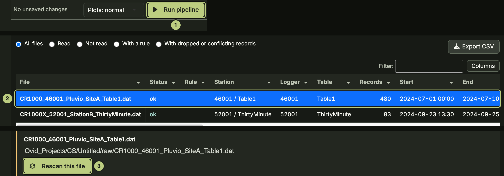
- Copy the files into a raw folder of the project. Keep the overlapping old ones.
- Press Run (1).
Result: only logger tables with new or changed files are read again; the rest come from cache/. Overlapping records are merged, the newest download's values winning.
Check: 2 Bring in files lists each new file and where its records went (2). To read a file again, select it and press Rescan this file (3).
2. Send a file to another station or leave it out
When: a file belongs to another logger, is a bad copy, or should not be used.
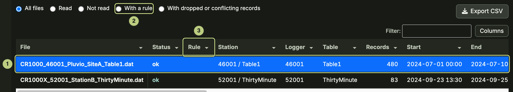
- 2 Bring in files: select the file (1).
- Below its details, give a reason and your initials, then Send to this station, Leave out of the next run, or drag across its plot and Remove these records from this file.
- Press Run. The rule is saved at once.
Result: a file rule in the set-up tables, applied on the next run. The raw file is not changed.
Check: With a rule (2) lists the file; the Rule column (3) shows it. The Audit trail says why.
3. Name the columns of CR10X files
When: CR10X mixed-array files show columns without names.
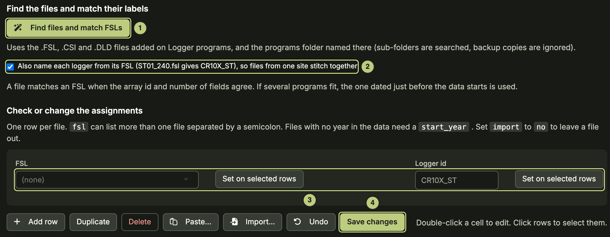
- Add the .FSL files on Logger programs (More pages).
- CR10X files (More pages): press Find files and match FSLs (1). Tick Also name each logger from its FSL (2) so files from one site stitch together.
- Check each file has an FSL and a logger id; set missing ones with Set on selected rows (3), then Save changes (4).
- Press Run.
Result: each array gets time stamps and column names from its FSL.
Check: Loggers and files (More pages) lists the logger with its columns named.
4. Give a logger a station
When: a new logger, a logger moved, or two loggers make up one station.
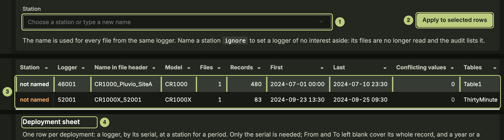
- 3 Loggers and stations: select the logger rows (3).
- Pick the Station (1) and press Apply to selected rows (2).
- A logger that moved: one row per station and period in the Deployment sheet (4).
- To set a logger aside, name its station ignore: its files are not read. Press Run.
Result: records go to stations by logger, header name, table and date.
Check: Logger history (More pages), tab Station lineage.
5. Give a raw column a common name
When: a column keeps its raw name (for example a new sensor or a renamed program variable).
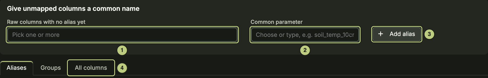
- Column names (More pages): pick the column under Raw columns with no alias yet (1) and the Common parameter (2).
- Press Add alias (3), then Run.
Result: the raw column is renamed to the common parameter (AirTC_Avg becomes air_temp) in every table that has it.
Check: the All columns tab (4); output/audit/column_dictionary.csv.
6. Combine stations into one record
When: one parameter needs a single record from several stations, for example a sensor that moved.
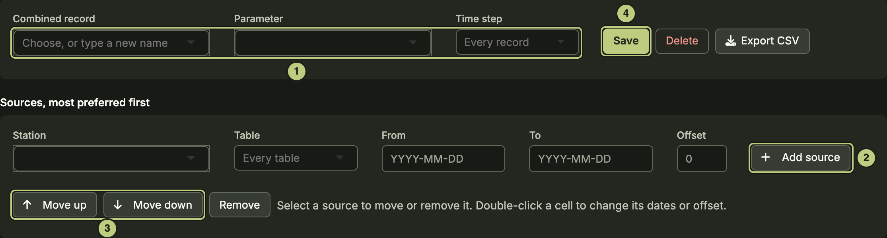
- Combined records: name the Combined record, pick its Parameter and Time step (1).
- Add source (2) for each station and table. Limit each with From and To; give an Offset if needed.
- Order the sources with Move up and Move down (3): where two have a value, the higher one wins.
- Save (4).
Result: the record is rebuilt on every run into output/composites/. Each value keeps the station it came from.
Check: Export CSV on the page.
7. Fix a logger clock
When: Clocks lists a finding (a power loss, a reset clock, overlapping files that disagree in time).
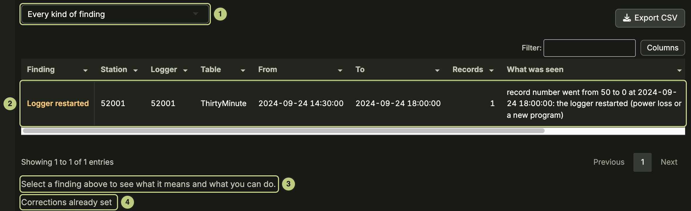
- Clocks: pick the kind (1) and select the finding (2). Read what it means below (3).
- A suggested shift: accept it here or in Needs you. Any other correction is made in the Workbench: Move the timestamps (by minutes, or the real time of the first record) or Remove the records, with a reason, then Add this correction.
- Press Run.
Result: a row in the clock corrections, applied before stitching.
Check: Corrections already set (4) lists it; the finding is gone from Clocks; output/audit/timestamp_checks.csv.
8. Set the time zone
When: before the first run, or when a logger kept a different clock.
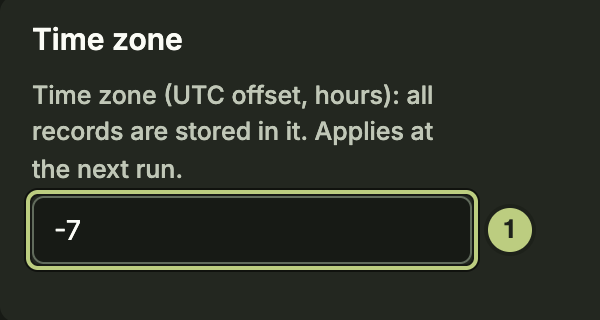
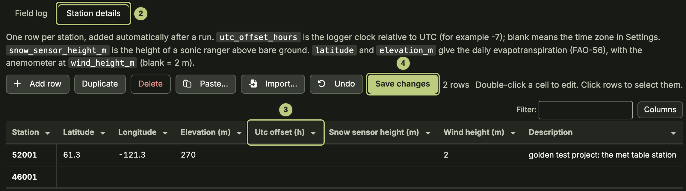
- Settings (gear, top right): Time zone as a UTC offset in hours (1), for example -7.
- A logger on another clock: Sites and field log (More pages), tab Station details (2). Set its Utc offset (h) (3); blank uses the Settings time zone.
- Save changes (4), then Run.
Result: every time stamp is moved to the project time zone; exports say which.
9. Remove a bad stretch
When: a sensor was down, being serviced or plainly wrong.
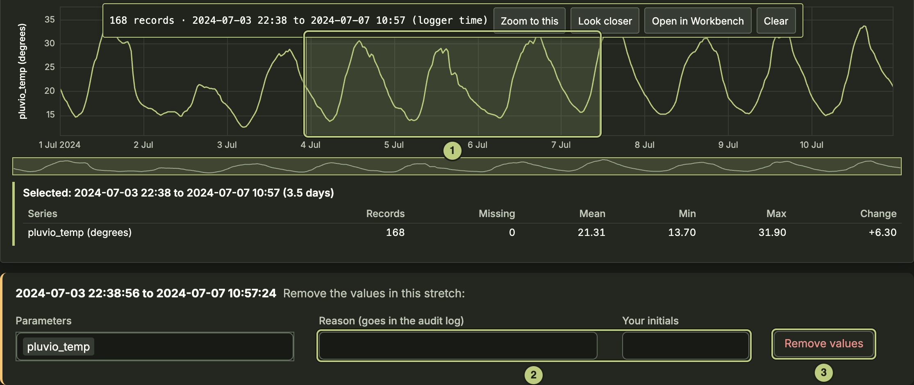
- Plot and explore (More pages): Shift + drag across the stretch (1), then Open in Workbench: removing values is done there.
- In the Workbench the stretch stays selected: Remove…, give a reason and your initials, then Write rows. To keep the values but mark them, use Correct a period… with action flag.
- Press Run.
Result: a row in Corrections over a period. The values are blanked on the next run; the old values stay in the audit trail. Restore… in the Workbench deletes the row.
Check: the stretch shows as removed on the plot; the Audit trail lists the values.
10. Add a calibration
When: a sensor needs a multiplier or an offset over a period, or a tipping bucket needs mm per tip.
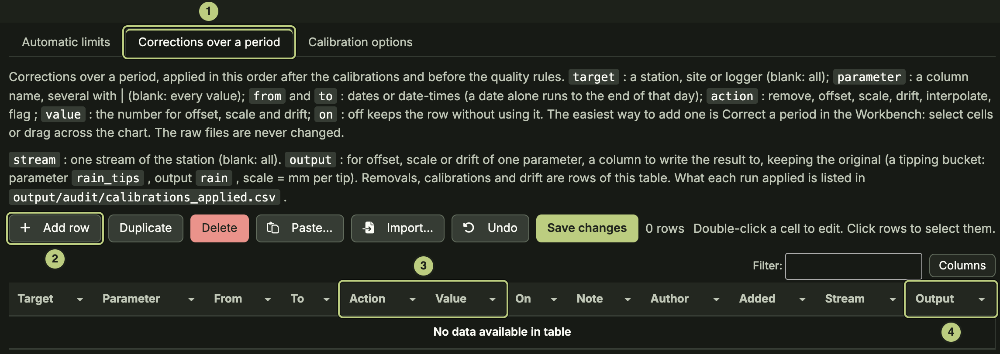
- In the Workbench (calibrations change data values, so the table is edited there): Calibrations and limits, tab Corrections over a period (1): Add row (2).
- Fill in Target (station), Parameter, From, To, Action scale or offset and its Value (3).
- To keep the original, name an Output column (4). Tipping bucket: parameter rain_tips, output rain, scale = mm per tip.
- Save changes, then Run.
Result: scale multiplies the values by Value, offset adds Value, over the period.
Check: output/audit/calibrations_applied.csv.
11. Change a quality limit
When: a limit removes good values or lets bad ones through.
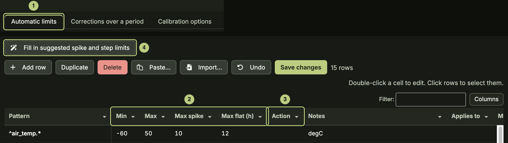
- In the Workbench: Calibrations and limits, tab Automatic limits (1). Pattern picks the parameters, Applies to the stations. The Standard view shows the limits.
- Edit Min, Max, Max spike, Max flat (h) or Max step per hour (2), and the Action (3): blank, remove or flag.
- Fill in suggested spike and step limits (4) fills only blank spike and step cells.
- Save changes, then Run.
Result: values outside the limits are removed or flagged and written to the audit trail with the rule. Max step per hour only flags.
Check: Set-up check warns of a limit that would remove everything.
12. Set up a weighing gauge
When: a Pluvio2 or Geonor gauge, especially one whose columns are not named acc_total and bucket_nr, or GN_mm.

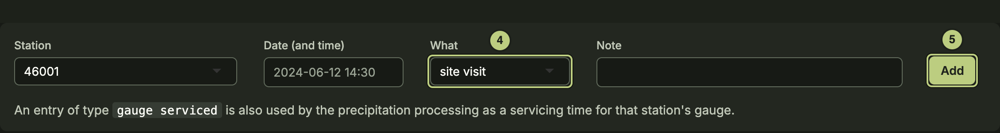
- Precipitation corrections, tab Gauge set-up (1): check the gauge is listed, or set its station, gauge and columns and Add (2).
- Sites and field log (More pages), tab Field log: for each emptying, top-up or service, pick What gauge serviced (4) and Add (5).
- Reprocess precipitation only (3).
Result: bucket content turned into precipitation per interval and per day, with undercatch correction where a wind station is set.
Check: tabs Bucket cycles, Servicing and Gaps; days marked low_confidence are read from the bucket.
13. Get evapotranspiration and albedo
When: daily ET (FAO-56 and Priestley-Taylor) or daylight albedo is blank.
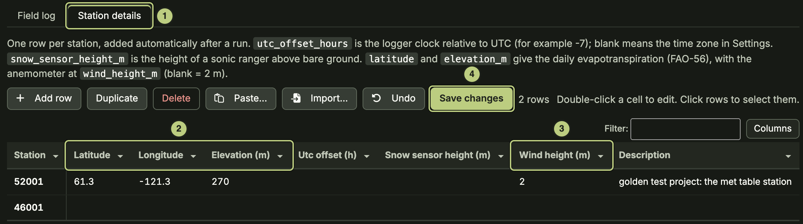
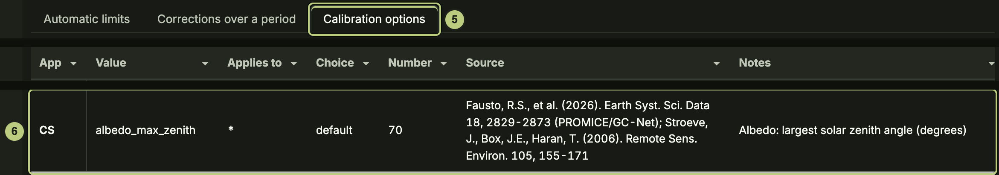
- Sites and field log (More pages), tab Station details (1): enter Latitude, Longitude and Elevation (m) (2); Wind height (m) (3) if the anemometer is not at 2 m.
- Save changes (4), then Run.
- The daylight limit is albedo_max_zenith (6) under Calibration options (5): default 70, the sun more than 20 degrees above the horizon.
Result: daily ET from radiation, temperature, humidity and wind; daily albedo from daylight records only.
Check: the daily table in the export. Without coordinates, albedo falls back to incoming shortwave above 50 W/m2; the run log says which was used.
14. Find out why a value was removed
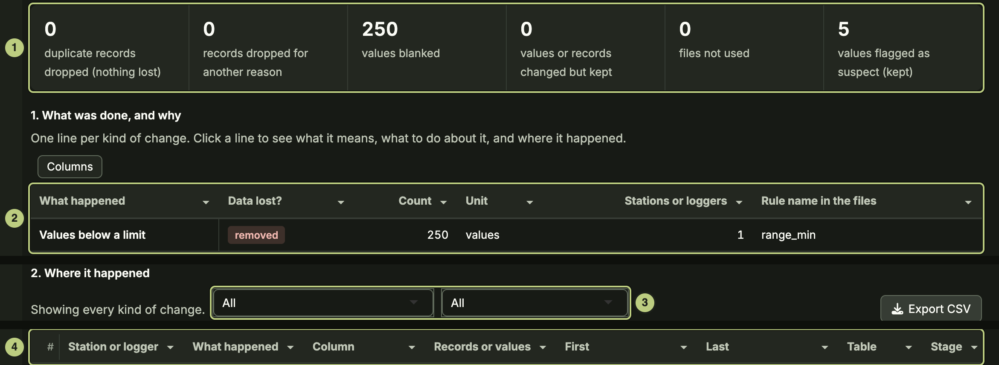
- Audit trail (More pages): read it top down: the totals (1), what was done and why (2), where it happened (3), then the single records and values (4).
- Click a line in (2) to see what it means, what to do about it and where it happened.
Result: each removed or changed value with its old value, the rule and the set-up row behind it.
15. Find failing sensors
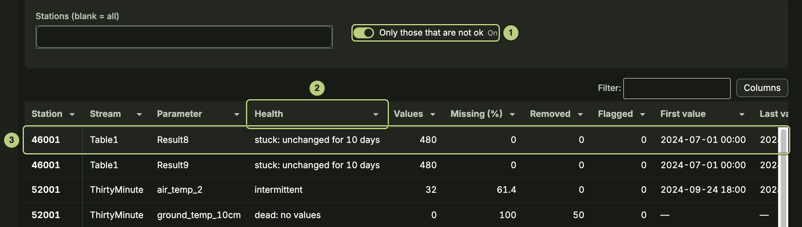
- Sensor health (More pages): with Only those that are not ok (1), every parameter that needs a look, worst first. Health (2): dead, stopped, failing, dying, stuck, intermittent or suspect.
- Click a row (3) to open its plot in Plot and explore. Remove its bad stretch (task 9) or note it in the field log.
16. Export data and reports
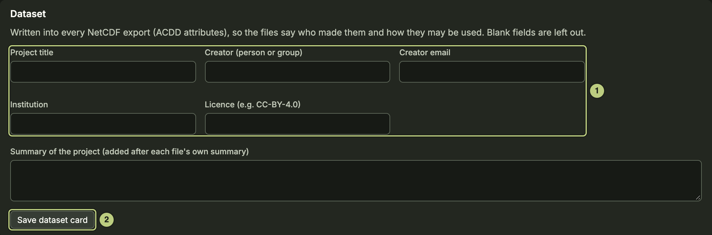
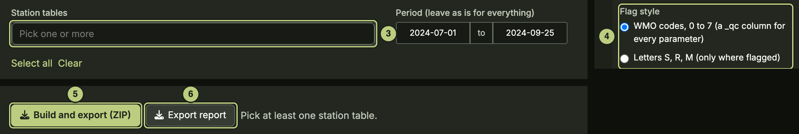
- Settings: fill in the Dataset card (1) and Save dataset card (2). It is written into NetCDF exports.
- 7 Report: pick the Station tables (3) and the Flag style (4).
- Build and export (ZIP) (5), or Export report (6) for the report alone.
Result: one zip that can be used without the app: a tidy CSV per station table with flag columns, daily and monthly summaries, a report per table (HTML, PDF or both), the processing level of each file and a readme.
17. Back up or share the set-up
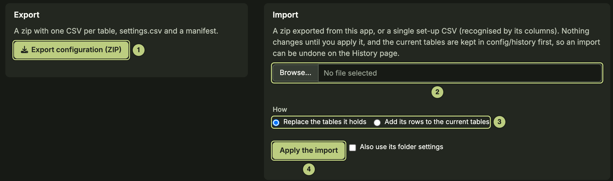
- Configuration (More pages): Export configuration (ZIP) (1) writes every set-up table and the folder settings.
- In another project: Browse… for the zip (2), pick How (3), then Apply the import (4).
Result: the replaced tables are kept in config/history; the History page undoes the import.
18. Report a problem
- A notice with a reference (E- and six characters) means part of a page failed; the app carries on.
- The lifebuoy button (top right) builds a troubleshooting zip: versions, logs and set-up, no raw data. Send it with the reference.